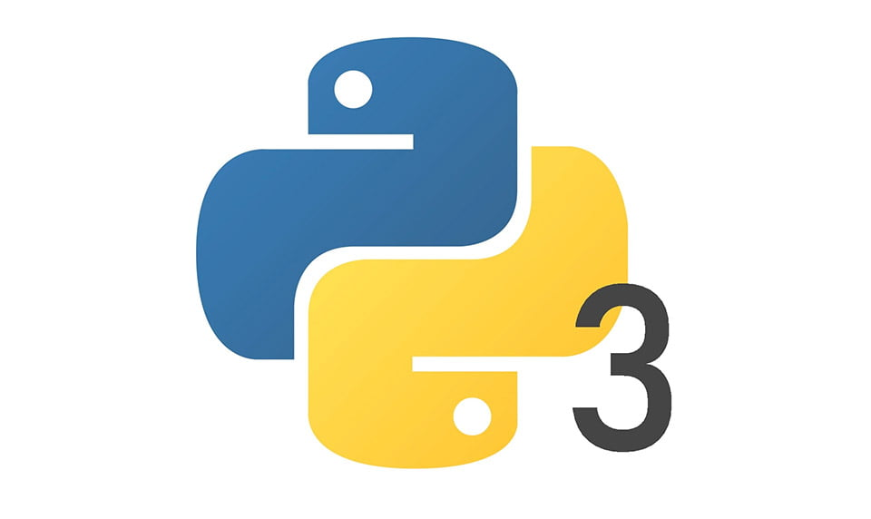

Programski jezik Phyton popularniji nego ikad
PYTHON je jedan od najpopularnijih svjetskih programskih jezika. U stvari, sada je to je više nego ikad. Python se popeo sa trećeg mjesta na drugo na posljednjoj ljestvici popularnosti programskih jezika koju je objavila analitička kompanija RedMonk. To je prvi put da jezik koji nije JavaScript, a koji je i dalje broj jedan u ocjenama kompanije, ili Java programski jezik, koji je zauzimao drugo mjesto, ušao u prva dva otkako je RedMonk počeo sastavljati svoje ljestvice 2012. godine.
Ta je prekretnica utoliko značajnija s obzirom na ponekad stjenovit prelazak s druge verzije Pythona, koju su programeri jezika prestali podržavati ove godine, na treću verziju.
RedMonk obično ne pravi velike promjene na ljestvici, piše u izvještaju saosnivač Stephen O’Grady, ali rijetko se može vidjeti bilo kakvo kretanje u najvišem sloju programskih jezika, koji se sastoji od dobro uspostavljenih jezika. JavaScript je primarni način na koji programeri pokreću kod unutar web browsera, a takođe se sve više koristi u druge svrhe, od razvoja aplikacija za mobilne uređaje i računare do programiranja dronova. Java je u međuvremenu standardni jezik za pisanje Android aplikacija i glavni je korporativni razvojni softver.
Ako je i bilo gubitaka Pyton ih je i više nego nadoknadio novom verzijom
Za to vrijeme programeri su se mogli odlučiti za prelazak na noviji programski jezik, poput Mozilla’s Rust, Google Go ili JetBrains Kotlin. U međuvremenu, noviji programeri mogli su se odlučiti za učenje šire korištenog JavaScript-a ili rješavati probleme oko toga koji će tutorijali, uzorci koda i biblioteke otvorenog koda raditi sa svakom verzijom Pythona. Ali ako je Python zbog tranzicije izgubio bilo kojeg programera, čini se da ih je više nego nadoknadio u novim konverterima.
O’Grady navodi Pythonovu svestranost kao jedan od razloga njegove stalne popularnosti. Kompanije poput Googlea, Dropboxa i Instagrama sve se uveliko oslanjaju na Python, kao i bezbrojni manji poduhvati. Takođe ima dom u akademskim krugovima kao omiljeni jezik za data-crunching mnogim naučnicima i matematičarima.
RedMonk rangira programske jezike na osnovu dva kriterija: broja postavljenih pitanja o svakom jeziku na web lokaciji sa pitanjima i odgovorima StackOverflow i broja projekata zasnovanih na svakom jeziku hostovanom na Microsoftovom servisu GitHub. Ideja je uočiti trendove u struci za razvoj softvera.
Još jedna zvijezda u usponu
U najnovijem izvještaju RedMonka bilo je malo pomaka u prvih 20 jezika. Ali O’Grady je dodijelio još jednu zvijezdu u usponu niže u redovima: Dart, jezik koji je razvio Google, skočio je za devet mjesta, sa 33. na 24. u posljednjih 18 mjeseci.
Dart je jezik za pisanje softvera koji se pokreće unutar web browsera. Dart kod preveden je na JavaScript, što podržavaju praktično svi moderni preglednici. O’Grady piše da je njegov porast popularnosti vjerovatno posljedica njegove upotrebe u Googleovom open source programskom frejmvorku Flutter-u, koji je objavljen u decembru 2018.
| Godina | Događaj |
|---|---|
| 1989 | Guido van Rossum počinje rad na Pythonu. |
| 1991 | Objavljena prva verzija Pythona (v0.9.0). Uvedene ključne funkcije poput print i list. |
| 1994 | Python 1.0 zvanično objavljen. Dodani moduli, eksterne biblioteke. |
| 2000 | Python 2.0 objavljen. Uveden garbage collector i list comprehensions. |
| 2008 | Python 3.0 objavljen. Unapređenja za Unicode i modernizacija sintakse. |
| 2010 | Python postaje sve popularniji u nauci i analitici podataka (NumPy, Pandas). |
| 2015 | Porast popularnosti Pythona zbog mašinskog učenja (TensorFlow, PyTorch). |
| 2020 | Python prepoznat kao jedan od najkorištenijih jezika u svetu (prema TIOBE indeksu). |
| Danas | Python dominira u oblastima poput web razvoja, nauke o podacima, automatizacije i veštačke inteligencije. |